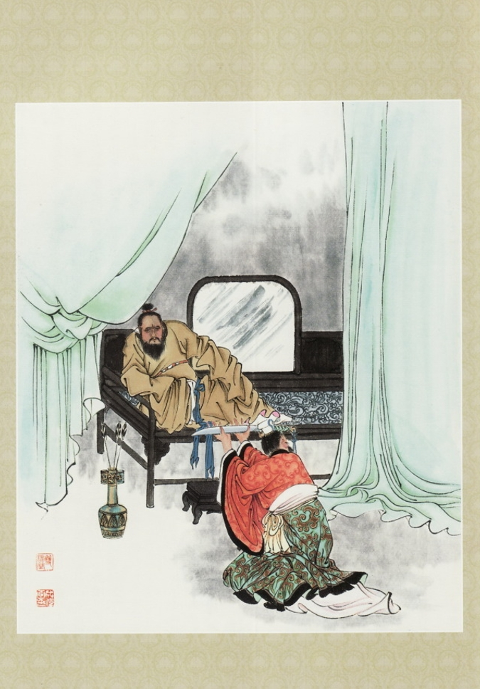

插图：谋董贼孟德献刀
且说董卓欲废少帝，立陈留王。来谓袁绍曰：“天下之主，宜得贤明，每念灵帝，令人愤毒！今欲立陈留王，何如？”绍曰：“今上即位未几，并无失德；汝欲废嫡立庶，非反而何？”卓怒曰：“天下事在我！我今为之，谁敢不从！汝视我之剑不利否？”袁绍亦拔剑曰：“汝剑利，吾剑未尝不利！”两个在筵上对敌。正是：丁原仗义身先丧，袁绍争锋势又危。
毕竟袁绍性命如何，且听下文分解。且说董卓欲杀袁绍，李儒止之曰：“事未可定，不可妄杀。”袁绍手提宝剑，辞别百官而出，悬节东门，奔冀州去了。卓谓太傅袁隗曰：“汝侄无礼，吾看汝面，姑恕之。废立之事，若何？”隗曰：“太尉所见是也。”卓曰：“敢有阻大议者，以军法从事！”群臣震恐，皆云“一听尊命”。
宴罢，卓问侍中周毖、校尉伍琼曰：“袁绍此去若何？”周毖曰：“袁绍忿忿而去，若购之急，势必为变。且袁氏树恩四世，门生故吏遍于天下；倘收豪杰以聚徒众，英雄因之而起，山东非公有也。不如赦之，拜为一郡守，则绍喜于免罪，必无患矣。”伍琼曰：“袁绍好谋无断，不足为虑；诚不若加之一郡守，以收民心。”卓从之，即日差人拜绍为渤海太守。
九月朔，请帝升嘉德殿，大会文武。卓拔剑在手，对众曰：“天子暗弱，不足以君天下。今有策文一道，宜为宣读。”乃命李儒读策曰：“孝灵皇帝，早弃臣民；皇帝承嗣，海内侧望。而帝天资轻佻，威仪不恪，居丧慢惰：否德既彰，有忝大位。皇太后教无母仪，统政荒乱。永乐太后暴崩，众论惑焉。三纲之道，天地之纪，毋乃有阙？陈留王协，圣德伟懋，规矩肃然；居丧哀戚，言不以邪；休声美誉，天下所闻，宜承洪业，为万世统。兹废皇帝为弘农王，皇太后还政，请奉陈留王为皇帝，应天顺人，以慰生灵之望。”
（内容节选，完整内容请查阅原著）